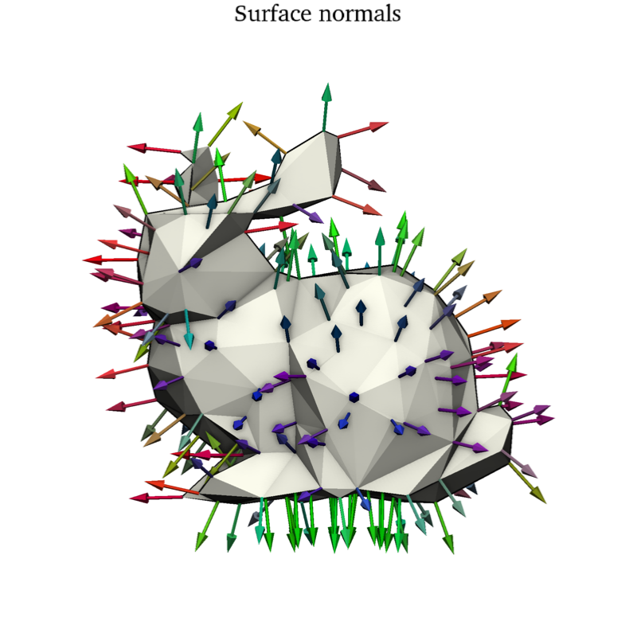
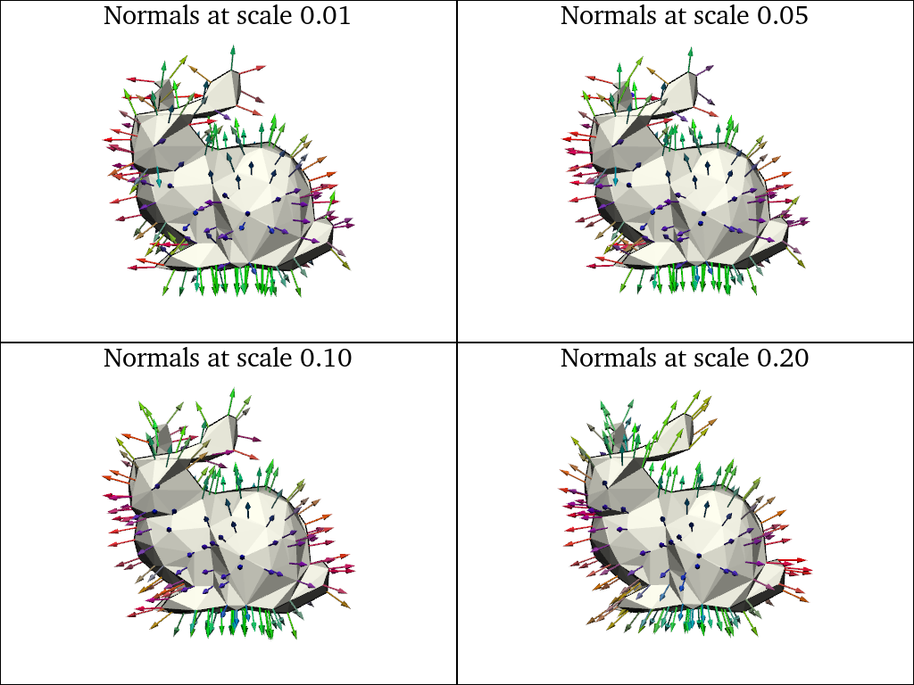
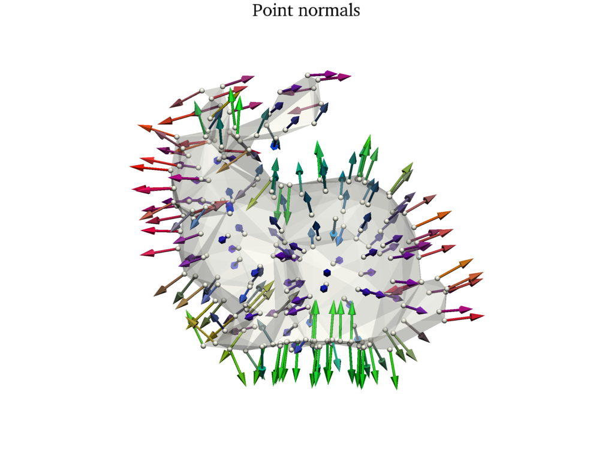

Note
Go to the end to download the full example code
How to compute local point normals
We use the point_normals() method to compute normal vectors at each vertex of a triangle mesh. This is useful for estimating the curvature of the surface.
First, we load the Stanford bunny as a triangle mesh.
import pyvista as pv
import skshapes as sks
mesh = sks.PolyData(pv.examples.download_bunny())
# To improve the readability of the figures below, we resample the mesh to have
# a fixed number of points and normalize it to fit in the unit sphere.
mesh = mesh.resample(n_points=200).normalize()
Then, we compute the point normals.
normals = mesh.point_normals()
sks.doc.display(
title="Surface normals",
shape=mesh,
vectors=-0.2 * normals,
vectors_color=normals.abs(),
)

Then, we compute the point normals.
pl = pv.Plotter(shape=(2, 2))
for i, scale in enumerate([0.01, 0.05, 0.1, 0.2]):
normals = mesh.point_normals(scale=scale)
pl.subplot(i // 2, i % 2)
sks.doc.display(
title=f"Normals at scale {scale:.2f}",
plotter=pl,
shape=mesh,
vectors=-0.2 * normals,
vectors_color=normals.abs(),
)
pl.show()

Then, we compute the point normals.
points = mesh.to_point_cloud()
normals = points.point_normals(scale=0.1)
pl = pv.Plotter()
sks.doc.display(plotter=pl, shape=mesh, opacity=0.3)
sks.doc.display(
plotter=pl,
title="Point normals",
shape=points,
point_size=20,
vectors=0.2 * normals,
vectors_color=normals.abs(),
)
pl.show()

Total running time of the script: (0 minutes 22.315 seconds)